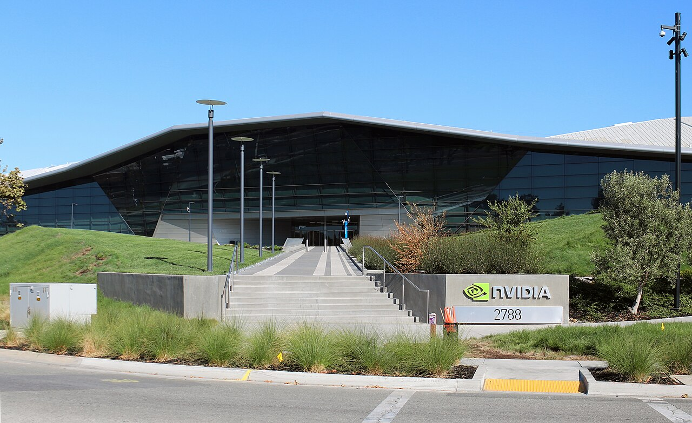

Nvidia revenue rises 65.5% to $215.9 billion as gross margin slips to 71.1%


Nvidia's revenue grew 65.5% to $215.9 billion in fiscal 2026, the year ended January 25, 2026. Data Center sales rose 68% to $193.7 billion. Gross margin fell 3.9 points to 71.1%, which the company tied to its move from Hopper systems to full Blackwell data-center systems and to a $4.5 billion charge on H20 chips for China. Net income still rose 64.7% to $120.1 billion, and free cash flow reached $96.7 billion.
Data Center drove a third year of rapid growth
Revenue growth slowed to 65.5%, after 125.9% in fiscal 2024 and 114.2% in fiscal 2025. Revenue is now 8.0 times the fiscal 2023 level of $27.0 billion, a compound rate of 100.0% a year over three years.
Nvidia's earnings release gives revenue by market. Data Center revenue rose 68% to $193.7 billion. Gaming rose 41% to $16.0 billion, Professional Visualization rose 70% to $3.2 billion, and Automotive rose 39% to $2.3 billion.
Within Data Center, the 10-K says computing revenue grew 59% on demand for the Blackwell platform. Networking revenue grew 142%, which the company tied to NVLink for its GB200 and GB300 systems and to its Ethernet and InfiniBand products.
Sales are concentrated. One direct customer accounted for 22% of revenue and another for 14%. Customers headquartered outside the United States accounted for 31% of revenue, down from 41% in fiscal 2025.
Margins slipped from their fiscal 2025 high
Gross margin fell to 71.1% from 75.0%. Cost of revenue rose 91.4%, faster than revenue. The company gave two reasons: its business moved from selling Hopper HGX systems to selling Blackwell full-scale data-center systems, and it took a $4.5 billion charge in the first quarter for excess H20 inventory and purchase obligations. That charge followed a US government rule in April 2025 that required a license to export H20 chips to China. Inventory provisions, net of releases, cut gross margin by 2.6%, against 2.3% in fiscal 2025.
Operating margin fell 2.0 points to 60.4%, less than gross margin, because operating expenses grew more slowly than revenue. Research and development rose 43.2% to $18.5 billion. The company said this came from a 29% rise in compensation and benefits and a 79% rise in compute and infrastructure costs. Even so, research and development fell to 8.6% of revenue, from 9.9% in fiscal 2025 and 27.2% in fiscal 2023.
Investment gains added to net income
Operating income rose 60.1% to $130.4 billion. Income outside operations rose to $11.1 billion, 4.3 times the $2.6 billion of fiscal 2025. The company said the increase came mainly from unrealized gains on private and publicly held equity investments, including its investment in Intel's common stock. These gains were 7.8% of pretax income.
The effective tax rate rose to 15.1% from 13.3%. Net income rose 64.7% to $120.1 billion, and diluted earnings per share rose 66.7% to $4.90. Net margin was 55.6%, close to the 55.8% of fiscal 2025.
Most operating cash is left over after capital spending
Cash from operations rose 60.3% to $102.7 billion, which the company put down to higher revenue. Purchases of property, equipment and intangible assets rose 86.7% to $6.0 billion. That was 5.9% of operating cash flow.
Free cash flow rose 58.9% to $96.7 billion, or 44.8% of revenue. In fiscal 2023 it was $3.8 billion.
Equity nearly doubled
Total assets rose 85.3% to $206.8 billion at January 25, 2026. Shareholders' equity rose 98.3% to $157.3 billion. Property and equipment, net of depreciation, rose 65.3% to $10.4 billion, still small next to total assets.
Debt was $8.5 billion, almost unchanged from a year earlier and equal to 5.4% of equity. Cash and short-term investments for fiscal 2026 are left blank in the table below, because the SEC's structured data for this filing does not include Nvidia's marketable securities.
Payouts to shareholders rose again
Nvidia spent $40.1 billion buying back shares, up from $33.7 billion, and paid $974 million in dividends. Together that is $41.1 billion, or 42.5% of free cash flow, down from 56.8% in fiscal 2025. The diluted share count fell 1.2% to 24,514 million. Stock-based compensation was $6.4 billion, or 3.0% of revenue.
Eight years of figures
How this report was made
- All financial figures come from Nvidia's annual reports on Form 10-K, taken from the SEC's EDGAR structured data (XBRL) for NVIDIA CORP, CIK 0001045810.
- Revenue by market (Data Center, Gaming, Professional Visualization and Automotive) comes from Nvidia's earnings release for the fourth quarter of fiscal 2026. Reasons for changes come from Management's Discussion and Analysis in the 10-K.
- Free cash flow is net cash from operations minus purchases related to property and equipment and intangible assets. Capital spending means those purchases.
- Capital spending before fiscal 2022 is not in the SEC's structured data, because Nvidia used its own label for it. Free cash flow therefore starts in fiscal 2022.
- Nvidia's fiscal 2026 filing does not tag its marketable securities in the SEC's structured data, so cash and short-term investments for that year are left blank and not used.
- Per-share figures and share counts are adjusted for the four-for-one stock split in 2021 and the ten-for-one stock split in 2024.
- This report does not cover the share price, valuation or analyst forecasts.
- More figures for Nvidia are on its company data page.
Sources: Form 10-K (SEC EDGAR) · Form 10-K filing index · EDGAR company facts for Nvidia · Nvidia fiscal 2026 fourth-quarter earnings release (Exhibit 99.1)